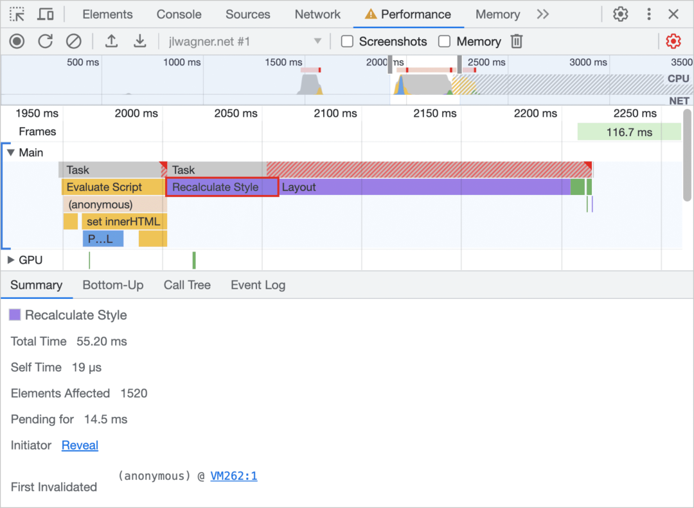
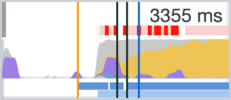

2024-07-10 22:50:49 · YinHao
JavaScript 通常用来改变页面的视觉效果。比如通过改变 style 样式或者通过计算后改变页面布局，比如搜索或排序数据。长时间运行的 JavaScript 可能是导致性能问题的常见原因，应该尽可能地减少它的影响。
通过添加和移除元素、更改属性、类或播放动画来改变 DOM 会导致浏览器重新计算元素样式，并在许多情况下重新布局页面的部分或全部内容。这个过程称为计算样式计算。
浏览器开始计算样式，通过创建一组匹配选择器来确定哪些类、伪类和 ID 适用于任何给定元素。然后，它处理匹配选择器的样式规则，并确定元素具有哪些最终样式。
Interaction to Next Paint (INP) 是一个以用户为中心的运行时性能指标，评估页面对用户输入的整体响应能力。它衡量了用户与页面交互时的延迟，直到浏览器绘制下一帧，展示相应的视觉更新给用户界面。
交互的一个重要组成部分是绘制下一帧所需的时间。用于呈现下一帧的渲染工作由许多部分组成，包括在布局、绘制和合成工作之前发生的页面样式计算。本页面侧重于样式计算成本，但减少与交互相关的渲染阶段的任何部分也会减少总延迟，包括样式计算在内。
简化选择器名称有助于加快页面的样式 计算。最简单的选择器在 CSS 中引用一个元素， 类别名称：
.title {
/* styles */
}
但是，随着任何项目的增长，它可能需要更复杂的 CSS， 选择器看起来像这样：
.box:nth-last-child(-n + 1) .title {
/* styles */
}
为了确定这些样式如何应用于页面，浏览器必须有效地询问“这是一个具有类名为 title 的元素，其父元素是具有类名为 box 的倒数第 n+1 个子元素吗？”根据所使用的选择器和具体浏览器的不同，这个过程可能需要很长时间。为了简化这个过程，您可以将选择器更改为只是一个类名：
.final-box-title {
/* styles */
}
这些替代的类名可能看起来有些奇怪，但它们使浏览器的工作变得简单得多。在之前的版本中，为了知道一个元素是其类型的最后一个元素，浏览器必须首先了解所有其他元素的情况，以确定是否有任何在它之后的元素可能是倒数第 n 个子元素。这比仅仅匹配一个类名相符的元素的成本要昂贵得多。
另一个性能考虑因素，通常比选择器复杂性更重要的是当元素发生变化时需要进行的工作量。
一般来说，计算计算样式的最坏情况成本是元素数量乘以选择器数量，因为浏览器需要至少一次地将每个元素与每个样式进行匹配以查看是否匹配。
样式计算可以直接针对少数元素而不是使整个页面失效。在现代浏览器中，这往往不是一个问题，因为浏览器并不总是需要检查所有可能受到更改影响的元素。另一方面旧版浏览器并没有总是针对这类任务进行优化。在可能的情况下，您应该减少失效元素的数量。
衡量样式重新计算成本的一种方法是使用性能 Chrome DevTools 中的面板。请执行以下操作测量：
最后停止录制时，您将看到类似于以下图像的内容：
顶部的条状图是一个微型火焰图，同时还绘制了每秒帧数。活动距离条状图底部越近，浏览器绘制帧的速度就越快。如果您看到火焰图在顶部水平化，并且顶部有红色条形图，那么您的工作可能导致长时间运行的帧。
像滚动这样的交互中出现长时间运行的帧值得仔细观察。如果您看到一个大的紫色块，请放大活动并选择标记为 “Recalculate Style” 的任何工作，以获取关于可能昂贵的样式重新计算工作的更多信息。
单击事件会显示其调用堆栈。如果渲染工作是由用户交互引起的，它会指出触发样式更改的 JavaScript。它还显示更改影响的元素数量——在这种情况下大约有 900 个元素——以及样式计算所需的时间。您可以利用这些信息开始尝试在您的代码中找到解决方案。
像 BEM（块、元素、修饰符）这样的编码方法内置了选择器匹配性能优势。BEM 建议所有内容都具有单个类，并且在需要层次结构时，该层次结构也会嵌入到类名中。
.list {
/* Styles */
}
.list__list-item {
/* Styles */
}
如果您需要一个修饰符，比如在 last-child 示例中，您可以添加如下内容：
.list__list-item--last-child {
/* Styles */
}
BEM 是组织 CSS 的良好起点，既从结构角度，也因为它促进了样式查找的简化。
如果您不喜欢 BEM，还有其他方法来处理您的 CSS，但在开始之前，您应该评估它们的性能和效率是否满足。